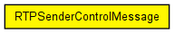

A message of the type RTPSenderControlMessage is created by an application to control the behavior of an rtp sender module. With this class the application can send a command string to the sender module like "PLAY" or "STOP". A message can have up to two float parameters.
Following commands are evaluated in RTPPayloadSender (although correct behavior must be implemented in modules for certain payload types):
The following diagram shows usage relationships between types. Unresolved types are missing from the diagram. Click here to see the full picture.
The following diagram shows inheritance relationships for this type. Unresolved types are missing from the diagram. Click here to see the full picture.
| Name | Type | Description |
|---|---|---|
| commandParameter2 | float | |
| commandParameter1 | float | |
| command | string |
// // A message of the type RTPSenderControlMessage is created by an application to control // the behavior of an rtp sender module. With this class the application can send a command // string to the sender module like "PLAY" or "STOP". A message can have up to two float // parameters. // // Following commands are evaluated in RTPPayloadSender (although correct behavior must // be implemented in modules for certain payload types): // - PLAY : start playing from current position // - PAUSE : pause playing, stay at current position // - STOP : stop playing, go to beginning // - PLAY_UNTIL_TIME : start playing from current position and play until given temporal position (relative to // start of file is reached) // - PLAY_UNTIL_BYTE : start playing from current position and play until this data byte is reached // - SEEK_TIME : go to temporal position within the file (not allowed while playing) // - SEEK_BYTE : go to data byte (not allowed while playing) // packet RTPSenderControlMessage { string command; float commandParameter1; float commandParameter2; }